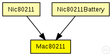
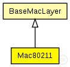

This documentation is released under the Creative Commons license
This documentation is released under the Creative Commons licenseC++ definition: click here
Implementation of the 802.11b MAC protocol. This module is intended to be used in combination with the Decider80211 as decider for the physical layer.
This module supports ad-hoc mode only (does not generate or handle management frames), and does not support fragmentation, RTS threshold, duplication detection and recovery.
The following diagram shows usage relationships between types. Unresolved types are missing from the diagram. Click here to see the full picture.
The following diagram shows inheritance relationships for this type. Unresolved types are missing from the diagram. Click here to see the full picture.
| BaseMacLayer (simple module) |
Base module for every mac layer module |
If a module type shows up more than once, that means it has been defined in more than one NED file.
| Nic80211 (compound module) |
This NIC implements an 802.11 network interface card. |
| Nic80211Battery (compound module) | (no description) |
| Name | Type | Default value | Description |
|---|---|---|---|
| notAffectedByHostState | bool | false | |
| coreDebug | bool |
debug switch |
|
| headerLength | double |
length of the MAC packet header (in bits) |
|
| queueLength | int | ||
| rtsCtsThreshold | int | ||
| bitrate | double | ||
| defaultChannel | int |
minimum channel support auto bit rate selection support: specify borders at which to change modulation. |
|
| autoBitrate | bool |
use auto bit rate adaptation |
|
| snr2Mbit | double |
threshold to use 2Mbit (in dB) |
|
| snr5Mbit | double |
threshold to use 5.5Mbit (in dB) |
|
| snr11Mbit | double |
threshold to use 11Mbit (in dB) |
|
| neighborhoodCacheSize | int |
keep information on neighborhood |
|
| neighborhoodCacheMaxAge | double |
consider information in cache outdate if older than (in seconds) |
|
| txPower | double |
the power to transmit packets with [mW] |
|
| centerFrequency | double |
the center frequency the Mac uses [Hz] |
| Name | Value | Description |
|---|---|---|
| class | Mac80211 |
| Name | Direction | Size | Description |
|---|---|---|---|
| upperGateIn | input |
from application layer |
|
| upperGateOut | output |
to application layer |
|
| upperControlIn | input |
control from application layer |
|
| upperControlOut | output |
control to application layer |
|
| lowerGateIn | input |
from NIC |
|
| lowerGateOut | output |
to NIC |
|
| lowerControlIn | input |
control from NIC |
|
| lowerControlOut | output |
control to NIC |
// // Implementation of the 802.11b MAC protocol. This module is intended // to be used in combination with the Decider80211 as decider for the // physical layer. // // This module supports ad-hoc mode only (does not generate or handle // management frames), and does not support fragmentation, RTS threshold, // duplication detection and recovery. // simple Mac80211 extends BaseMacLayer { parameters: @class(Mac80211); int queueLength; int rtsCtsThreshold; double bitrate @unit(bps); // minimum channel support // minimum channel support int defaultChannel; // minimum channel support // auto bit rate selection support: specify borders at which // to change modulation. bool autoBitrate; // use auto bit rate adaptation // threshold to use 2Mbit (in dB) // threshold to use 2Mbit (in dB) double snr2Mbit @unit(dB); // threshold to use 2Mbit (in dB) // threshold to use 5.5Mbit (in dB) // threshold to use 5.5Mbit (in dB) double snr5Mbit @unit(dB); // threshold to use 5.5Mbit (in dB) // threshold to use 11Mbit (in dB) // threshold to use 11Mbit (in dB) double snr11Mbit @unit(dB); // threshold to use 11Mbit (in dB) // keep information on neighborhood int neighborhoodCacheSize; // consider information in cache outdate if older than (in seconds) double neighborhoodCacheMaxAge @unit(s); //the power to transmit packets with [mW] double txPower @unit(mW); //the center frequency the Mac uses [Hz] double centerFrequency @unit(Hz); }
This documentation is released under the Creative Commons license